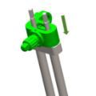
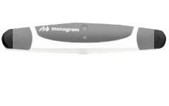

<p-dialog #errorDialog [header]="selectedHeader" [(visible)]="display" [modal]="true" [responsive]="true"
  [draggable]="false" [resizable]="false" [styleClass]="styleClasses" [minY]="170" [blockScroll]="true"
  [maximizable]="false" [baseZIndex]="10000" (onHide)="onHide()">
  <!-- <p-dialog header="Godfather I" [(visible)]="display" modal="true" [style]="{width: '50vw'}" [baseZIndex]="10000"
    [draggable]="false" [resizable]="false" (onHide)="onHide()" appendTo="body"> -->
  <div class="">
    <div class="center-align">
      <p class="heading-title mb-3" [innerHtml]="selectedText"></p>
      <div *ngIf="selectedPopup==0"> 
        <div class="probe-tip-label mt-4 mb-1">Probe Tip Accuracy</div>
        <div class="mb-4"><label class="probe-tip-no">1</label></div>
        <!-- <div class="mb-4" *ngIf="probeTipAccuracy==1"><label class="probe-tip-no">1</label></div>
        <div class="mb-4" *ngIf="probeTipAccuracy==2"><label class="probe-tip-no">1.5</label></div> -->
      </div>
      <div *ngIf="selectedPopup!=7 && selectedPopup!=6" class="mt-4">
        
        
        
        
        
        
        
        

        
        
      </div>
      <div *ngIf="selectedPopup==6">
        <div class="horizontal_tabs">
          <div class="tabs">
            <input type="radio" name="tabs" id="tabone" checked="checked">
            <label for="tabone" class="tab1 label1" (click)="selectTab1()">Femur</label>
            <div class="tab scroll-box">
              <div class="row">
                <div class="col-xl-12">
                  <div class="row">
                    <div class="col-xl-3  flex-display1 pt-0 pb-0">
                      <div class="image-box"></div>
                      <div class="step-label">Step</div>
                      <div class="number-box">1</div>
                      <div class="content-box">Insert femur bone pins 10cm proximal to the superior edge of patella and 30 degrees medial of midline using long tracker stabilizer.</div>
                    </div>
                    <div class="col-xl-3  flex-display1 pt-0 pb-0" style=" border-left: 1px solid #bed6da ;border-right: 1px solid #bed6da ;">
                      <div class="image-box"> </div>
                      <div class="step-label">Step</div>
                      <div class="number-box">2</div>
                      <div class="content-box">Slide clamp over bone pins and seat against top of tracker stabilizer. Orient assembly such that the clamp's screws points away from the camera and tracker adapter screw points away from incision.</div>
                    </div>
                    <div class="col-xl-3  flex-display1 pt-0 pb-0"  style="border-right: 1px solid #bed6da ;">
                      <div class="image-box"></div>
                      <div class="step-label">Step</div>
                      <div class="number-box">3</div>
                      <div class="content-box">Attach the Femur Tracker to the adapter.</div>
                    </div>
                    <div class="col-xl-3  flex-display1 pt-0 pb-0">
                      <div class="image-box"></div>
                      <div class="step-label">Step</div>
                      <div class="flex-display2">

                        <div class="number-box mr-3">4</div>
                        <div class="number-box mr-3">5</div>
                        <div class="number-box">6</div>
                      </div>

                      <div class="content-box"><p>Orient the Femur Tracker toward the camera.</p> <p>Using the Square Driver, sufficiently tighten the screws - tracker screw, adapter screw, clamp screw.</p><p>Verify the assembly is rigid.</p></div>
                    </div>

                  </div>

                </div>

              </div>

            </div>
            <input type="radio" name="tabs" id="tabtwo">
            <label for="tabtwo" class="tab2 label2" (click)="selectTab2()">Tibia</label>

            <div class="tab scroll-box">
              <div class="row">
                <div class="col-xl-12">
                  <div class="row">
                    <div class="col-xl-3  flex-display1 pt-0 pb-0">
                      <div class="image-box"></div>
                      <div class="step-label">Step</div>
                      <div class="number-box">1</div>
                      <div class="content-box">Insert tibia bone pins 10cm inferior to the tibia tubercle and 1cm medial
                        to tibial crest using short tracker stabilizer.</div>
                    </div>
                    <div class="col-xl-3  flex-display1 pt-0 pb-0" style=" border-left: 1px solid #bed6da ;border-right: 1px solid #bed6da ;">
                      <div class="image-box"> </div>
                      <div class="step-label">Step</div>
                      <div class="number-box">2</div>
                      <div class="content-box">Slide clamp over bone pins and seat against top of tracker stabilizer.
                        Orient assembly such that the clamp's screws points away from the camera and tracker adapter
                        screw points away from incision.</div>
                    </div>
                    <div class="col-xl-3  flex-display1 pt-0 pb-0"  style="border-right: 1px solid #bed6da ;">
                      <div class="image-box"></div>
                      <div class="step-label">Step</div>
                      <div class="number-box">3</div>
                      <div class="content-box">Attach the Tibia Tracker to the adapter.</div>
                    </div>
                    <div class="col-xl-3  flex-display1 pt-0 pb-0">
                      <div class="image-box"></div>
                      <div class="step-label">Step</div>
                      <div class="flex-display2">

                        <div class="number-box mr-3">4</div>
                        <div class="number-box mr-3">5</div>
                        <div class="number-box">6</div>
                      </div>

                      <div class="content-box"><p>Orient the Tibia Tracker toward the camera.</p> <p>Using the Square Driver,
                        sufficiently tighten the screws - tracker screw, adapter screw, clamp screw.</p><p>Verify the
                        assembly is rigid.</p></div>
                    </div>

                  </div>

                </div>

              </div>

            </div>
          </div>
        </div>
      </div>
      <div class="camera-popup mx-auto" *ngIf="selectedPopup==7">
        <div class="top-view">
          <div class="top-view-image">
            <span class="white-ball-top-view"></span>
            <span class="blue-ball-top-view"></span>
            <span class="yellow-ball-top-view"></span>
            
          </div>
          <div class="top-view-label">
            Top View
          </div>
        </div>
        <div class="front-view">
          <div class="front-view-image">
            <span class="white-ball-front-view"></span>
            <span class="blue-ball-front-view"></span>
            <span class="yellow-ball-front-view"></span>
            
          </div>
          <div class="front-view-label">
            Front View
          </div>
        </div>
        <div class="side-view">
          <div class="side-view-image">
            <span class="white-ball-side-view"></span>
            <span class="blue-ball-side-view"></span>
            <span class="yellow-ball-side-view"></span>
            
          </div>
          <div class="side-view-label">
            Side View
          </div>
        </div>
      </div>
    </div>
    <div class="row mt-5" *ngIf="selectedPopup==4">
      <div class="col-xl-12 center-align">
        <p class="serial-label">Mount End Effector Serial No.</p>
        <select class="serial-no" (change)="onSerialNoChange($event)">
          <option value="null">Select</option>
          <option value="mos/123456">MOS/123456</option>
          <option value="mos/123456">MOS/321455</option>
        </select>
      </div>
    </div>
    <div class="row" [ngClass]="selectedPopup==4 ? 'mt-5' : 'bone-margin-top'">
      <div class="col-xl-12 center-align">
        <div class="form-group">
          <button type="button" *ngIf="selectedPopup==8" class="btn-Ok" (click)="onHide()">Verify</button>
          <button type="button" *ngIf="selectedPopup!=8 && selectedPopup!=4" class="btn-Ok"
            (click)="onHide()">Confirm</button>
          <button type="button" *ngIf="selectedPopup==4" class="btn-Ok" [disabled]="!mountEndEffectorBtn"
            (click)="onHide()">Confirm</button>
           
        </div>
      </div>
    </div>
  </div>
  <!-- <p-footer>
        <button type="button" pButton icon="pi pi-check" (click)="display=false" label="Yes"></button>
        <button type="button" pButton icon="pi pi-times" (click)="display=false" label="No" class="ui-button-secondary"></button>
    </p-footer> -->
</p-dialog>
